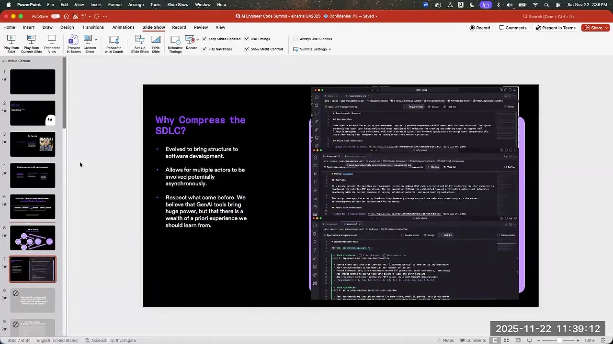
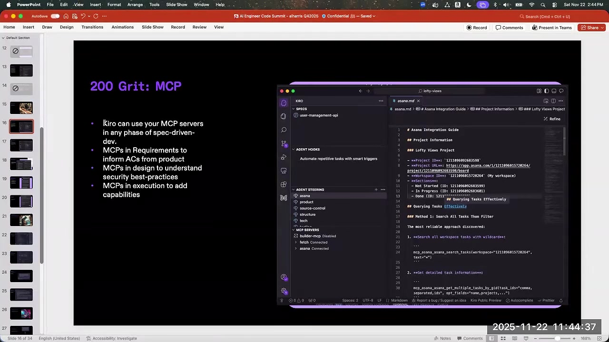
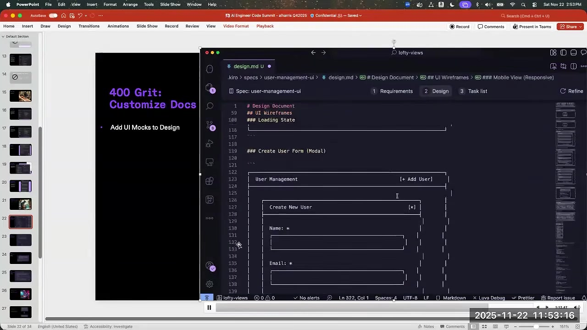
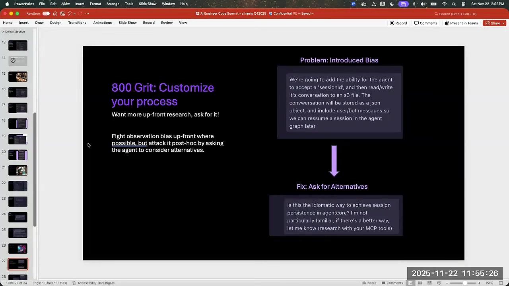
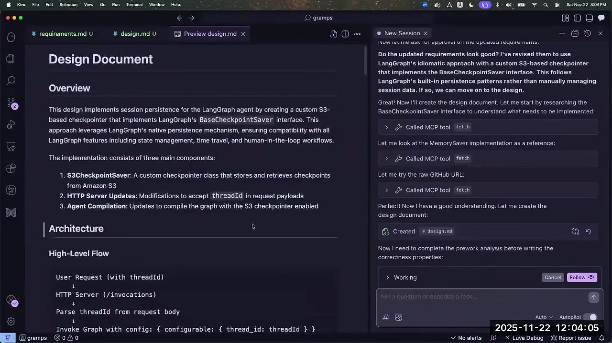
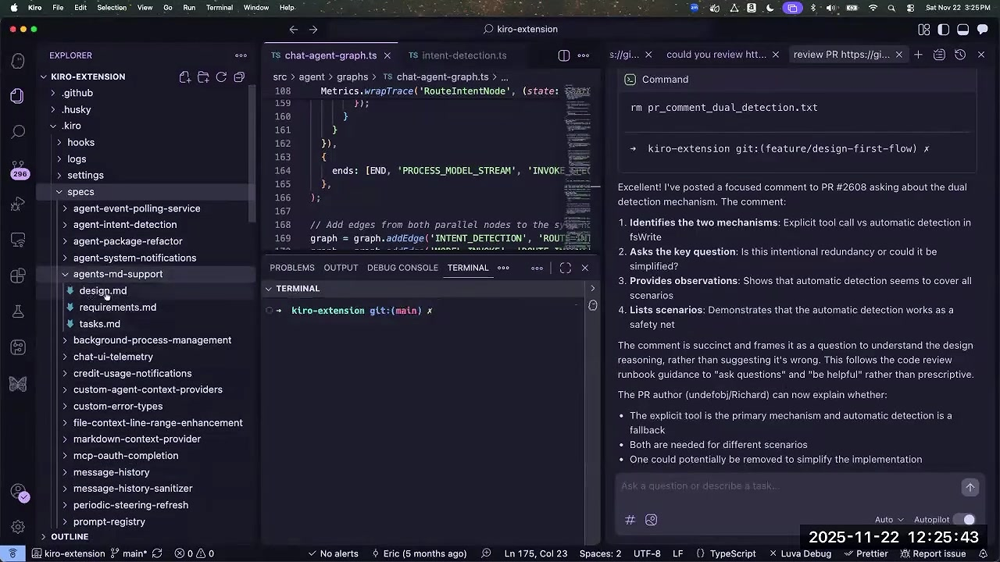
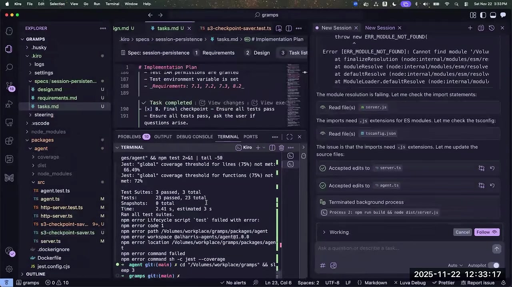
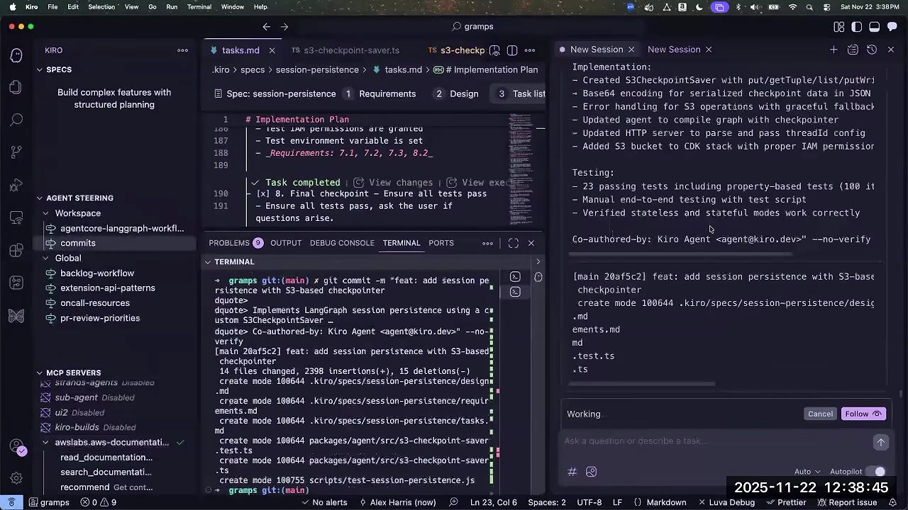

CHAPTER 01规范的价值是把意图接到可检查行为
Al Harris 把 Spec 同时看成一组产物、一套开发流程和建立其上的验证工具。目标是让更复杂的 AI 开发得到可重复、可审查的结果。
流程从提示转为带验收条件的需求，再生成设计、正确性属性和任务列表，逐项实现；设计发现的副作用又应回写需求。requirements.md、design.md、tasks.md 表示的是不同职责，并非让一份设计文件承担所有意图。00:02:23 ↗

EARS 为什么不仅是另一种文档格式
EARS 是 Easy Approach to Requirements Syntax，用结构化自然语言表达触发条件与系统应满足的行为。现场 checkpointer 需求使用 WHEN / SHALL 形式，约束如何利用 LangGraph 接口、保存与恢复状态。这样既可与人讨论，也便于后续非 LLM 工具解析，减少所有环节都依赖自由文本推断。00:03:36 ↗
属性测试把需求转成不变量，生成不同输入寻找反例。Python Hypothesis、Node fast-check 与 Clojure spec 是讲者给的工具例子。找到反例便可否定该属性；找不到只增加信心，并非数学证明，还取决于属性是否准确、生成器是否覆盖重要情形、测试是否写好。讲者本人也强调“高信心”有条件。00:04:14 ↗
另一条方向是扫描需求歧义和冲突，结合经典自动推理。Al 的愿景是 LLM 与确定性工具共同工作；不能将本场提到的长期双向同步、未来改进，全部视为当前已经自动完成的能力。视频画面日期为 2025 年 11 月，产品状态均按录制时理解。
CHAPTER 02用外部证据和可读产物改进规划
MCP 不应等到写代码时才使用。需求和设计本身就需要真实任务、文档、已有产品与测试条件。
| 阶段 | 现场做法 | 减少的问题 |
|---|---|---|
| 需求 | 从 Asana 拉取任务、已有描述，生成验收条件 | 重复口述与业务信息遗漏 |
| 设计 | 用 Fetch、AWS Documentation 等查询依据 | 按印象选技术、未比较替代方案 |
| 实现 | 调用工具与任务上下文，要求明确测试用例 | 只有“完成”的自述，没有可检查行为 |

增加工具也有成本：启停 MCP 或改工具集合可能破坏提示缓存。录制时 Al 建议长会话中谨慎修改配置。工具应按所需引入，不是所有 AWS 用户都预装同样集合；他也强调产品目标覆盖其他云与本地系统。00:09:16 ↗
产物可以定制，结构负责衔接而非限制表达
他让 Kiro 在用户管理设计里补 ASCII 线框图，提前讨论“添加用户”按钮位置；这把 UI 分歧放到实现前解决。还可以让任务列出明确的单元测试，必要时由 Hook 检查，避免模型宣布完成却把失败测试当麻烦跳过。00:15:51 ↗

他用砂纸目数比喻三层改进：200 目增加 MCP 能力，400 目改善需求、设计、任务的内容，800 目进一步调整过程本身。可定制不意味着随意破坏任务解析结构；任务 UI、可选任务和 LSP 等能力仍依赖可识别的组织方式。00:19:08 ↗
CHAPTER 03记忆功能实战：需求中的技术偏见如何传下去
“给 Agent 加会话记忆”和“把对话写到 S3”不是同一个层级的决定。直接把方案写进需求，会让后续研究围绕它展开。
示例 Gramps 是运行在 AgentCore 上、使用 LangGraph 的冷笑话生成器。每次返回相同笑话，才产生了会话持久化需求。项目骨架由 Node.js / TypeScript、CDK 与常用工程工具组成；Al 坦言自己正借原型学习 AgentCore，而非宣称已熟悉其全部能力。00:35:14 ↗
最初提示已经指定 session ID 和 S3 文件，Kiro 随即规划自定义 S3 checkpointer。Al 要求它用 MCP 重新比较“这是否是惯用方法”，曾得到 AgentCore Memory 替代建议；但现场这一轮只找到了 LangGraph 原生持久化能力，仍沿 S3 前进。他特意继续这个有偏方案，展示后来再纠正的代价，并未在本场完成切换 AgentCore Memory。00:25:28 ↗

从需求到实际实现经过哪些衔接
屏幕设计列出 S3CheckpointSaver、HTTP 请求的 threadId 解析、Agent 编译时接入 checkpointer；需求还约束键格式、序列化与失败行为。最后实现修改 CDK、增加 S3 bucket 及权限，并把 saver 接入图，而非只输出三份 Markdown。00:28:05 ↗

把部署过程中踩过的 CDK 参数、提交偏好写成 Steering，可让后续任务复用经验。它适合表达“如何在本项目工作”，但任何早期偏好也可能锚定 Agent，因此仍应允许它质疑过时或不合适的方案。00:36:54 ↗
本例证明了可以沿规范生成跨文件改动，但不能据此认定 S3 就是该场景最佳存储。讲者明确把比较替代方案当作操作者应主动推动的工作。
CHAPTER 04已有代码库与长会话：先让信息可发现
规范不会消除既有工程结构的影响。模块内聚、可靠测试和有选择地取上下文，决定 Agent 是否能理解大系统。
对已有大代码库，Kiro 会研究工作树。职责清楚、组件内聚时，可以只关注相关模块；如果为赶发布积累大量技术债，Agent 和开发者一样难导航。Code–OSS 是 Al 提到的真实大库，但他并未声称规模对表现没有影响。00:38:16 ↗
索引不等于把整库放进提示词
录制时的索引更多用于代码搜索、文件选择等辅助体验，不是把整个索引注入 Agent。Al 更偏好给少量初始上下文和寻找资料的工具，让 Agent 按任务逐渐发现内容；相关效果来自团队评测与经验，本场没有展示完整基准数据。00:42:30 ↗
| 问答议题 | 录制时给出的说明 | 使用时的含义 |
|---|---|---|
| 会话长度 | 无增量剪枝；累积至上限，再一次性摘要 | 不要假设有持续自动清理 |
| 缓存 | 正常轮次缓存 token 比例约 90–95%，一次摘要可能等 30–45 秒 | 修剪历史与改工具集合存在缓存权衡 |
| 任务切换 | UI 逐项启动默认是新会话，带规范与当前任务 | 前项的聊天历史不会自动共享 |
| 多 Agent | 桌面版当时还无子 Agent；CLI 有 Custom Agents | 应区分工具形态和录制时版本 |
Al 个人在窗口允许时会让同一会话依序处理多项任务；现场使用的是预览构建，还解释了“所有任务”被误读成并行的缺陷。这些都是版本情境，不能当成今天所有 Kiro 版本的固定行为。00:43:49 ↗
CHAPTER 05让规范持续演进，并验证真实完成状态
功能规范需要边界与生命期；测试、提交和部署则各有不同的完成标准。
Kiro 团队按功能或问题域保存多份规范。一次性、很少再改的 AGENTS.md 支持规范可能被删除；消息历史 sanitizer 则随着新增验证规则持续更新。现场追加遥测时，Agent 找到了原来的规范并修改，而不是必然新建。不过 Al 承认发现旧规范还不完全可靠，需要操作者引导。00:47:57 ↗

跨安全、API 与日志的个人信息脱敏需求，可以选一份主规范，或另建跨功能规范；这是系统边界判断，不能期待 Agent 无条件自动选对。多根工作区能把独立项目一起打开，但不等于已经解决需求所有权。非功能要求也要显式写入设计或 Steering，例如延迟、成本、锁竞争、语言选择、代码风格与覆盖率偏好。00:53:54 ↗
现场结果与仍需确认的部分
演示最终生成 S3 持久化代码，Agent 汇报 23 条测试通过及属性测试，提交带 Kiro Agent 共同署名。但中途原画面同时出现覆盖率未达阈值、测试命令失败和模块导入错误，随后继续修正；不能把“测试用例通过数量”当作所有质量门槛均已通过。00:57:19 ↗

末尾提交命令还出现 --no-verify，因此提交成功本身不能证明全部提交钩子已执行。这是对画面的观察，不是讲者给出的最佳实践建议。Al 最后仍说可以部署到后端再观察，视频没有继续展示完整云端验收。01:02:44 ↗

有人要求比较有无规范的实证效果，Al 说团队有基准、博客里有部分属性测试准确率数据，但手头没有具体数字。本场因此不能证明这套流程对任意项目的收益幅度。适合带走的实践是：清楚表达验收条件、让方案可被质疑、把正确性属性落到测试，并始终检查真实完成状态。
本页描述录制时的功能和路线。完整中文稿保留现场问题、回答与演示中的犹豫；少数未能清楚听辨的工具或人名在原位注明。产品后续变化不回写成讲者当时已经展示的能力。
原始来源：Spec-Driven Development: Agentic Coding at FAANG Scale and Quality — Al Harris, Amazon Kiro。官方演讲页
总结与逐字稿分别提供主题理解和原序阅读；原视频截图可点击查看。讲者的经验判断、路线设想与现场演示结果在正文对应位置区分。